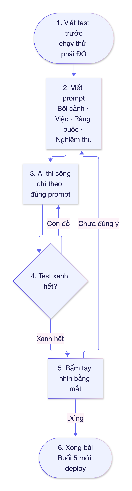

📒 SỔ TAY TRA NHANH — BUỔI 0 & BUỔI 1
Không phải bài giảng mới. Đây là trang tra cứu 30 giây khi bạn quên một khái niệm. Mỗi mục: định nghĩa 1 câu → ví dụ thật từ app của bạn → câu chốt phải nhớ.
🔑 1. BVRN — công thức prompt (quên là mở đây)
| Nhãn | Nghĩa | Trả lời câu hỏi | Ví dụ từ bài tập D của bạn |
|---|---|---|---|
| B | Bối cảnh | Đang ở đâu, có gì? | "App ở thư mục the-tu-vung-mini, có 10 test đang PASS" |
| V | Việc | Muốn làm gì? | "Thêm nút thứ ba 'Quay lại từ trước'…" |
| R | Ràng buộc | Không được làm gì? | "Không đổi giao diện, không xoá nút cũ, dùng class .btn" |
| N | Nghiệm thu | Làm sao biết là đúng? | "5 test mới xanh + 10 test cũ vẫn xanh + bấm tay apple → rice" |
Câu chốt: tên đúng là BVRN, không phải BBNR. Thiếu R = AI tự do sáng tạo (hôm nay: nó sẽ tự vẽ giao diện nút mới).
🎯 2. Luật chơi khi cho AI sửa code (đỏ trước — xanh sau)

Câu chốt: "Đỏ trước → xanh sau → bấm tay nhìn". Không có bước "đỏ trước" nghĩa là bạn đang sửa mò.
🦴 3. Ba file = ba bộ phận (mở app ra là nhớ)
| Bộ phận | File | Trả lời | Sửa khi muốn |
|---|---|---|---|
| Xương | index.html |
Có gì trên trang? | Đổi tiêu đề, thêm nút, thêm chỗ trống id |
| Áo | style.css |
Trông thế nào? | Màu, cỡ chữ, bo góc |
| Não | script.js |
Bấm thì làm gì? | Thêm từ vựng, thêm nút, đổi luật |
Câu chốt: sửa chữ trong HTML mà app không đổi → không hỏng, do script.js chạy sau và ghi đè.
🏷️ 4. id — số báo danh
<div id="emoji">🍎</div> ← xương khai báo · tim('emoji').textContent = … ← não tìm tới.
Câu chốt: đổi id ở một file mà quên file kia → nút bấm "gõ cửa phòng không có ai" → lỗi số 1 của người mới.
🧪 5. Test — người gác cổng (giống bác thợ điện bật thử từng công tắc)
node --test test/khoa-hoc.test.mjs→ 10 test gốc, phải 10/10 sau mỗi lần sửa.node --test _bai-tap-d/test/nghiem-thu.mjs→ 5 test của bài tập nút "Quay lại".
Câu chốt: test xanh KHÔNG chứng minh app đúng ý. Test chạy trên "trang giả"; xoá div#emoji vẫn xanh nhưng app sẽ lỗi. Vì vậy luôn bấm tay nhìn bằng mắt.
💻 6. Terminal — 3 kiểu "im lặng" phải phân biệt
| Bạn thấy | Nghĩa | Xử lý |
|---|---|---|
Dấu nhắc ~ % chờ sẵn, gõ không hiện chữ |
Terminal chưa nhận phím / đang bôi đen | Click vào vùng trắng, bấm Esc |
| Chạy xong, không in gì, dấu nhắc quay lại | Thành công mà không có gì để báo | Không phải lỗi |
| Dấu nhắc không quay lại | Cửa sổ đang bận (ví dụ python3 -m http.server) |
Ctrl + C để nhả ra |
Câu chốt: trước khi chạy lệnh mới, hỏi "dấu nhắc đã quay lại chưa?".
📜 7. Đọc log — 200, 404, lỗi đỏ
| Dòng | Nghĩa |
|---|---|
"GET / 200" |
Trình duyệt xin trang → có và OK |
"GET /favicon.ico 404" |
Xin icon tab → không có → bình thường, app không lỗi |
zsh: command not found: # |
Dán cả dòng chú thích # vào Terminal → bỏ các dòng # |
SyntaxError: does not provide an export named … |
Tính năng đó chưa tồn tại trong code → đúng khi test viết trước |
🧰 8. Bộ lệnh dùng suốt khoá (copy dán được ngay)
cd /Users/santabu/Documents/deepseek-harness/default-workspace/english-for-kids/khoa-hoc-vibe-coding/the-tu-vung-mini
python3 -m http.server 8123
cd /Users/santabu/Documents/deepseek-harness/default-workspace/english-for-kids/khoa-hoc-vibe-coding/the-tu-vung-mini && node --test test/khoa-hoc.test.mjs && node --test _bai-tap-d/test/nghiem-thu.mjs
| Việc | Lệnh |
|---|---|
| Mở app | dòng 1 ở trên, rồi mở http://127.0.0.1:8123 |
| Tắt app | Ctrl + C |
| Chạy cả 2 bộ test | dòng 2 ở trên (kỳ vọng pass 10 và pass 5) |
| Xem đang ở thư mục nào | pwd |
❓ 9. Tự hỏi mỗi lần AI sửa xong code (checklist 4 câu)
- AI có sửa đúng file trong prompt không? (
git diff --stat— buổi 5 sẽ học) - Có vượt ràng buộc không (đổi giao diện, xoá nút cũ, thêm file lạ)?
- Test cũ còn xanh không?
- Tôi đã bấm tay và thấy đúng ý chưa?
Nếu câu 1–4 chưa đủ "có" → chưa xong bài, dù AI nói "đã hoàn thành".